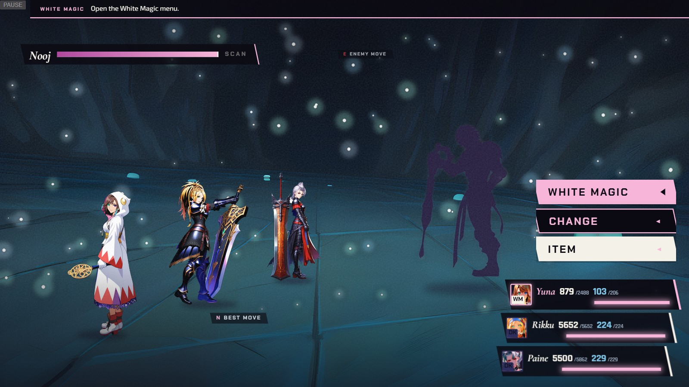

2,999
Lightfall at ≤ 2,999
5,000 > 2,488 max HP
CMarks in the world — shade 3: Nooj nears Lightfall
Composite: O-3 A plate, party at engine positions, real Chapter V HUD · overlays = mockup · Nooj = placeholder shape (O-2) · numbers illustrative
CONCEPT